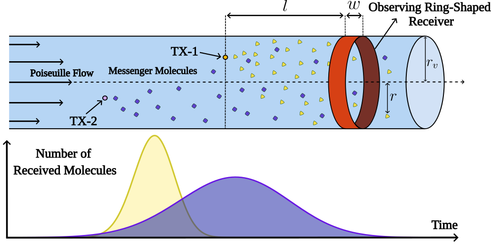
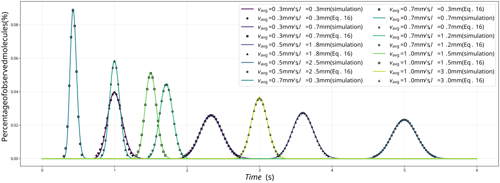
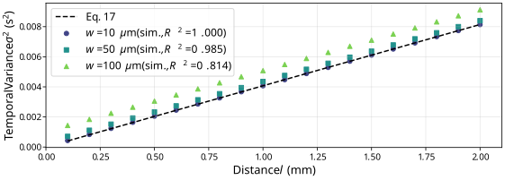
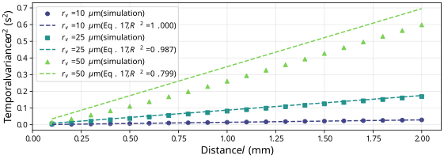
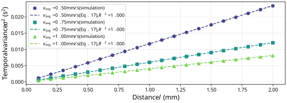
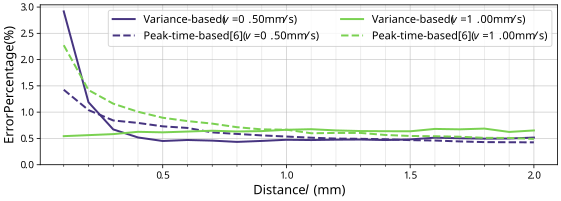

Transmitter localization in vessel-like molecular communication channels is a fundamental problem with potential applications in healthcare. Existing analytical solutions either assume knowledge of emission time or require multiple closely spaced receivers, which limits their applicability in realistic scenarios. In this letter, we propose a simple closed-form approximation that exploits the temporal variance of the received molecular signal to estimate the distance between the transmitter and the receiver without emission time information. The method is derived from a Gaussian approximation of the received signal near its peak and gives an explicit variance–distance relation. Simulation results in physically relevant capillary vessel scale show that the proposed method achieves distance prediction with error on the order of 1%.
TL;DR: VALOR estimates TX–RX distance from a single receiver using only the temporal variance of the received signal — no emission time required — achieving ∼1% error in capillary-scale environments.
We consider a cylindrical vessel-like environment with fully reflective lateral boundaries, where particles propagate by diffusion and advection under a Poiseuille flow profile. A ring-shaped observing receiver of width $w$ is placed at axial distance $l$ downstream on the vessel boundary (Fig. 1).

Propagation Model.
The net displacement of a particle in a single time step $\Delta t$ combines diffusion and Poiseuille advection:
$$\Delta\vec{r} = \bigl(\Delta X_{\mathrm{diffusion}} + \Delta X_{\mathrm{flow}},\;\Delta Y_{\mathrm{diffusion}},\;\Delta Z_{\mathrm{diffusion}}\bigr),$$where $\Delta X_{\mathrm{diffusion}}, \Delta Y_{\mathrm{diffusion}}, \Delta Z_{\mathrm{diffusion}} \sim \mathcal{N}(0,\, 2D\Delta t)$, and the axial flow displacement follows the parabolic Poiseuille profile
$$\Delta X_{\mathrm{flow}} = v(r)\,\Delta t = 2v_{\mathrm{avg}}\!\left(1 - \frac{r^2}{r_v^2}\right)\!\Delta t.$$Channel Model.
The Péclet number $\mathrm{Pe} = v_{\mathrm{avg}} r_v / D$ characterises the relative importance of advection over diffusion. Introducing the effective diffusion coefficient $D_e = D(1 + \mathrm{Pe}^2/48)$ collapses the 3-D transport problem into an equivalent 1-D form. The probability of a molecule being detected at distance $l$ at time $t$ is
$$P(l,\,t) \approx \frac{w}{\sqrt{4\pi D_e t}}\exp\!\left(-\frac{(l - v_{\mathrm{avg}}\,t)^2}{4D_e t}\right).$$Although $P(l,t)$ is Gaussian in the spatial variable $l$, it is not Gaussian in time $t$. The VALOR method exploits a local Gaussian approximation near the signal peak to expose this structure in the time domain.
The received signal peaks at $t_{\mathrm{peak}} = l/v_{\mathrm{avg}}$. Expanding the exponent of $P(l,t)$ as a second-order Taylor series around $t_{\mathrm{peak}}$ shows that the arrival waveform is locally Gaussian in time with variance
$$\sigma^2 = \frac{2 D_e\, l}{v_{\mathrm{avg}}^3}.$$Inverting this relation yields a closed-form distance estimator that requires no knowledge of the emission start time:
$$\hat{l} = \frac{\hat{\sigma}^2\, v_{\mathrm{avg}}^3}{2 D_e}.$$Validity of the Gaussian Approximation.
The approximation is controlled by two dimensionless correction factors arising from the cubic and quartic Taylor remainders:
$$\alpha_3 = 3\sqrt{2}\sqrt{\frac{D_e}{l\,v_{\mathrm{avg}}}}, \qquad \alpha_4 = \frac{24\,D_e}{l\,v_{\mathrm{avg}}}.$$Both are small when $D_e / (l\,v_{\mathrm{avg}}) \ll 1$, a condition satisfied in capillary-scale environments at millimetre-range TX–RX separations.
We validate VALOR with a particle-based Monte Carlo simulator ($M = 10^6$ molecules, 1000 realisations, $\Delta t = 0.1\,\mathrm{ms}$, $D = 300\,\mu\mathrm{m}^2/\mathrm{s}$, $r_v = 5\,\mu\mathrm{m}$, $w = 1\,\mu\mathrm{m}$).
Gaussian Approximation Fit.
As shown in Fig. 2, the analytical expression closely matches particle-based simulations across all tested velocity and distance combinations, confirming the validity of the approximation in the capillary-scale regime.

Variance–Distance Linearity.
As predicted by the variance formula, temporal variance increases linearly with $l$. The match, with $R^2 > 0.999$ across all tested velocities, confirms the accuracy of the Gaussian approximation in the capillary-scale regime.




Comparison with the Peak-Time Method.
VALOR achieves accuracy comparable to the peak-time method of [6] while requiring neither emission-time knowledge nor multiple receivers.
| Method | Emission time needed? | No. of receivers | Error (mm-scale distances) |
|---|---|---|---|
| Peak-time [6] | Required | 1 (if $t_0$ known) or ≥2 | <1% |
| VALOR (ours) | Not required | 1 | <1% |
| VALOR matches peak-time accuracy without its restrictive assumptions. | |||
We introduced VALOR, a variance-based method for transmitter localization in vessel-like molecular communication channels. By exploiting the closed-form relation between the temporal variance of the received signal and the TX–RX distance $l$, VALOR operates with a single receiver and requires no knowledge of the emission time. Particle-based simulations at capillary scale confirm prediction errors on the order of 1%, matching peak-time-based approaches that rely on additional assumptions.
Future work will extend VALOR to connected vessel networks with branching geometries, providing a more realistic assessment of its applicability in biological systems.
@misc{erdönmez2026variancebasedtransmitterlocalization,
title={Variance Based Transmitter Localization in Vessel-Like Molecular Communication Channels},
author={Dağhan Erdönmez and H. Birkan Yilmaz},
year={2026},
eprint={2603.25213},
archivePrefix={arXiv},
primaryClass={cs.IT},
url={https://arxiv.org/abs/2603.25213},
}